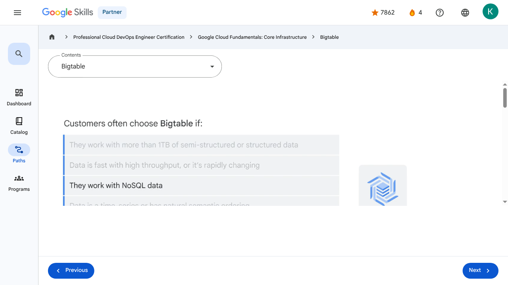

Storage in the Cloud - Bigtable | Google Skills for Partners
\nMetadata
\nFull Page Screenshot
\n
\nYouTube Video
\n\n
\nVideo ID: bfztO0_4fhw
\n\n\nTranscript
\n\n
\n00:00
\nThe last of Google Cloud’s core storage options we’re going to explore is Bigtable.
\n\n
\n00:06
\nBigtable is Google's NoSQL big data database service.
\n\n
\n00:11
\nIt's the same database that powers many core Google services, including Search, Analytics, Maps, and Gmail.
\n\n
\n00:18
\nBigtable is designed to handle massive workloads at consistent low latency and high throughput, so it's a
\n\n
\n00:24
\ngreat choice for both operational and analytical applications, including Internet of Things, user analytics, and financial data analysis.
\n\n
\n00:33
\nWhen deciding which storage option is best, customers often choose Bigtable if: They’re working with more than 1TB of semi-structured or structured data.
\n\n
\n00:43
\nData is fast with high throughput, or it’s rapidly changing.
\n\n
\n00:46
\nThey’re working with NoSQL data.
\n\n
\n00:49
\nThis usually means transactions where strong relational semantics are not required.
\n\n
\n00:54
\nData is a time-series or has natural semantic ordering.
\n\n
\n00:57
\nThey’re working with big data, running asynchronous batch or synchronous real-time processing on the data.
\n\n
\n01:04
\nOr they’re running machine learning algorithms on the data.
\n\n
\n01:08
\nBigtable can interact with other Google Cloud services and third-party clients.
\n\n
\n01:14
\nUsing APIs, data can be read from and written to Bigtable through a data service
\n\n
\n01:18
\nlayer like Managed VMs, the HBase REST Server, or a Java Server using the HBase client.
\n\n
\n01:27
\nTypically this is used to serve data to applications, dashboards, and data services.
\n\n
\n01:34
\nData can also be streamed in through a variety of popular stream processing frameworks like Dataflow Streaming, Spark Streaming, and Storm.
\n\n
\n01:43
\nAnd if streaming is not an option, data can also be read from and written to Bigtable through batch processes like Hadoop MapReduce, Dataflow, or Spark.
\n\n
\n01:53
\nOften, summarized or newly calculated data is written back to Bigtable or to a downstream database.
\n\n
\n00:00
\nThe last of Google Cloud’s core storage options we’re going to explore is Bigtable. 00:06 Bigtable is Google's NoSQL big data database service. 00:11 It's the same database that powers many core Google services, including Search, Analytics, Maps, and Gmail. 00:18 Bigtable is designed to handle massive workloads at consistent low latency and high throughput, so it's a 00:24 great choice for both operational and analytical applications, including Internet of Things, user analytics, and financial data analysis. 00:33 When deciding which storage option is best, customers often choose Bigtable if: They’re working with more than 1TB of semi-structured or structured data. 00:43 Data is fast with high throughput, or it’s rapidly changing. 00:46 They’re working with NoSQL data. 00:49 This usually means transactions where strong relational semantics are not required. 00:54 Data is a time-series or has natural semantic ordering. 00:57 They’re working with big data, running asynchronous batch or synchronous real-time processing on the data. 01:04 Or they’re running machine learning algorithms on the data. 01:08 Bigtable can interact with other Google Cloud services and third-party clients. 01:14 Using APIs, data can be read from and written to Bigtable through a data service 01:18 layer like Managed VMs, the HBase REST Server, or a Java Server using the HBase client. 01:27 Typically this is used to serve data to applications, dashboards, and data services. 01:34 Data can also be streamed in through a variety of popular stream processing frameworks like Dataflow Streaming, Spark Streaming, and Storm. 01:43 And if streaming is not an option, data can also be read from and written to Bigtable through batch processes like Hadoop MapReduce, Dataflow, or Spark. 01:53 Often, summarized or newly calculated data is written back to Bigtable or to a downstream database.
\nPage Text
\nPartner 4 navigate_next Professional Cloud DevOps Engineer Certification navigate_next Google Cloud Fundamentals: Core Infrastructure navigate_next Bigtable Previous Next Recertify in 3 simple steps: Link your Google Skills and certification account profiles using the same email to get started. Instantly see which certifications are eligible for renewal. Complete courses and skill badges to renew your certifications automatically. By clicking "Accept", I consent to share my name, email, and course completion data with Google Skills' certification partner, CM Connect, to receive continuing education credit for certification renewal.\n
Images
\n\n\n \n
\nMain Resources
\nyoutube
- \n
- Youtube \n
videos
- \n
- Course Introduction \n
- Cloud computing overview \n
- IaaS and PaaS \n
- The Google Cloud network \n
- Environmental impact \n
- Security \n
- Open source ecosystems \n
- Pricing and billing \n
- Google Cloud resource hierarchy \n
- Identity and Access Management (IAM) \n
- Service accounts \n
- Cloud Identity \n
- Interacting with Google Cloud \n
- Virtual Private Cloud networking \n
- Compute Engine \n
- Scaling virtual machines \n
- Important VPC compatibilities \n
- Cloud Load Balancing \n
- Cloud DNS and Cloud CDN \n
- Connecting networks to Google VPC \n
- Google Cloud storage options \n
- Cloud Storage \n
- Cloud Storage: Storage classes and data transfer \n
- Cloud SQL \n
- Spanner \n
- Firestore \n
- Bigtable \n
- Comparing storage options \n
- Introduction to containers \n
- Kubernetes \n
- Google Kubernetes Engine \n
- Cloud Run \n
- Development in the cloud \n
- Prompt Engineering \n
- Course summary \n
- Resource \n
- Resource \n
labs
- \n
- Resource \n
- Google Cloud Fundamentals: Getting Started with Cloud Marketplace \n
- Get Started with Virtual Private Cloud Networking and Compute Engine \n
- Google Cloud Fundamentals: Getting Started with Cloud Storage and Cloud SQL \n
- Hello Cloud Run \n
external_links
- \n
- Resource \n
- Professional Cloud DevOps Engineer Certification \n
- Google Cloud Fundamentals: Core Infrastructure \n
- Dashboard \n
- Catalog \n
- Paths \n
- Subscriptions \n
- Activities \n
- Achievements \n
- Resource \n
- Resource \n
- Programs \n
- Overview \n
- Quiz \n
- Quiz \n
- Quiz \n
- Quiz \n
- Quiz \n
- Quiz \n
- Quiz \n
- Course resources \n
- Claim credential \n
- Course Survey Recommended \n
- Resource \n
Headings
\n- \n
- H3: Transcript \n
- H2: Recertify in 3 simple steps: \n
- H1: A newer version of this course is available. Your progress will carry over if you choose to upgrade. However, your completion percentage may change if the new version has added or removed any learning activities. Click the preview button to see the course changes before upgrading. \n